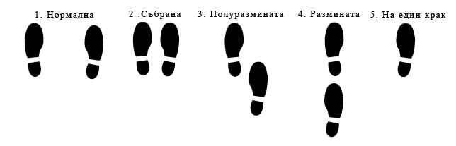

Моето тяло моят затвор
Написването на тази статия е плод на осъзнаване, че повечето хора имат неправилно разбиране за това, какво точно ще им липсва чисто физически, когато остареят, и не, това не е способността да пробягат 5 километра, повярвайте ми. Всички, които са полагали грижи за свои близки в безпомощно състояние, знаят много добре за какво говоря.
Скорошната загуба на близки хора ме подтикна да се замисля за бъдещето на всеки от нас, доживявайки 70-80 годишна възраст. А какво всъщност ни чака? Чисто статистически, днес това се смята за преклонна възраст или възраст, на която се очаква да не можем да изминаваме големи разстояния пеш, защото се уморяваме лесно, да не можем да повдигаме тежки неща, защото нямаме сила, да приемаме толкова много лекарства, че почти всеки ден да се чудим от кой вид, колко и кога трябва да пием. Неспособността да обслужваме дори себе си, предизвиква дълбоко усещане за непълноценност, безпомощност и фатална неизбежност, защото някак си тялото ни от средство за придвижване в пространството се е превърнало в наш затвор.
А каква е всъщност ролята на тялото ни?
Ако не ти пука за тялото ти, къде ще живееш?
Джим Рон
Тялото не е нищо повече от средство, чрез което материализираме желанията си за различни изживявания: дали да изкачим планина, дали да правим секс или да отидем на среща с приятели, да караме ски, колело или сърф, в общи линии всичко изискващо физическото ни присъствие. Тялото ни е една машина и като такава има нуждата от непрестанни и правилни грижи, за да функционира оптимално за дълъг период от време. Тук идва едно голямо Но! Но колкото и да не ни се иска, с времето ще става все по-трудно да станем от леглото, да изминем дълго разстояние пеш, да вдигнем нещо тежко, да отворим буркан или бутилка, да се качим и слезем от автобус или автомобил, списъкът е дълъг. Защо става така? С напредването на възрастта скелетната мускулна маса намалява ежегодно с 0.1 - 0.5%, започвайки от 30 годишна възраст, с драматично ускорение след 65 годишна възраст, състояние по-известно като саркопения.
Саркопения
Саркопенията е синдром, характеризиращ се с прогресивна загуба на скелетна мускулна маса, пряко свързана с физическа слабост, лошо качество на живот и смърт. Като рискови фактори биват сочени възрастта, полът и нивото на физическа активност. Това състояние често пъти е съпроводено с акумулиране на мастна тъкан, така че въпреки липсата на наднормено тегло, налице е подчертана мускулна слабост, състояние, известно като саркопенично затлъстяване. Затлъстяването и саркопенията могат да се потенциират взаимно и да действат синергично, причинявайки физическо увреждане, метаболитни нарушения и смъртност. Инсулиновата резистентност е една от причините, свързана със загубата на мускулна маса и обратното. Загубата на скелетна мускулатура, която е най-голямата инсулиново реагираща тъкан, може да доведе до инсулинова резистентност, създавайки по този начин предпоставки за сърдечно-съдови заболявания и други метаболитни нарушения. Като пряка причина за загубата на мускулна маса и сила е посочена именно липсата на физическа активност. Това предполага, че физическите упражнения следва да служат като защитен фактор и превенция.
Видове саркопения
Саркопенията бива първична, когато освен самото стареене, не е очевидна друга причина, и вторична, когато са налице една или повече други причини. Като външни фактори за вторична саркопения се посочват недостатъчният прием на протеини, намаленият прием на витамин Д, както и наличието на остри и хронични съпътстващи заболявания. Съпътстващите заболявания могат да доведат до намалена физическа активност и периоди на обездвижване. Важно е да се отбележи, че хората, които са водили активен начин на живот, имат повече мускулна маса, когато са на възраст. Установено е, че комбинацията от висок процент телесни мазнини и слабост на хватателните мускули на ръката, са свързани с наличието на протичащи възпалителни процеси. Тези резултати предполагат, че възпалението има важна роля в развитието на саркопенично затлъстяване.
Физически тестове разкриващи наличието на саркопения
Някои от тестовете използвани за разкриване наличието на саркопения са:
- бърза походка на дистанция от 4 м, като скоростта трябва да бъде не по-малка от 1м/секунда, както и изминаване на 400 м в рамките на 6 минути, като след третиране на засегнатия, за значим резултат се счита увеличаването на 6 минутното ходене с 50 м и на бързото ходене с 0.1м/секунда;
- тестване силата на хвата чрез динамометър/силомер; тук отчетената стойност за жени трябва да е не по-малка от 16-20 кг, а за мъже не по-малка от 26-30 кг, като се взима предвид най-високият резултат от три последователни теста на лявата и дясната ръка;
-
сядане и ставане от стол пет пъти за време, без помощта на ръцете и
без спиране в долна или горна позиция; тук оценката е представена
между 0 и 4 точки в зависимост от времето за изпълнение:
- 0 точки, когато времето за изпълнение е по-голямо от 60 секунди;
- 1 точка при време 16.7 секунди или повече;
- 2 точки, когато е в рамките на 13.70 секунди, но не повече от 16.69 секунди;
- 3 точки, между 11.20 секунди и 13.69 секунди;
- 4 точки при 11.69 секунди или по-малко.
- преминаване през различни позиции на стъпалата, с цел оценка на баланса, като се тръгва от лесно към трудно. Тук оценката се извършва отново на принципа между 0 и 1 точки в зависимост от покриването на следните параметри: позиции 1, 2 и 3 трябва да се задържат за време не по-малко от 10 секунди всяка, като при по-малко от това, се дават 0 точки, а при 1 секунда и повече 1 точка. В 4-та позиция изискването е да се задържи отново за 10 секунди, като при по-малко от 3 секунди се дават 0 точки, между 3 секунди и 9.99 секунди 1 точка и при 10 секунди или повече 2 точки. При тестването на баланса на всеки от двата крака, отново се дава оценка между 0 и 1 точки, като тук времето за задържане на позицията трябва да е не по-малко от 5 секунди на всеки крак. Важно изискване при изпълнението на всеки един от тестовете, е ръцете да бъдат прибрани пред или отстрани на тялото, за да се избегне балансиране чрез уравновесяване на различни части на тялото. 
Други тестове, използвани за констатация на намалени физически възможности са: поставяне на книга върху рафт, обличане и събличане на престилка, взимане на поставена на пода монета, завъртане на място на 360 градуса.
Като следваща причина за загуба на мускулна функционалност и сила се посочва (ММТ) или натрупването на междумускулна мастна тъкан.
ММТ - междумускулна мастна тъкан
Човекът е главна фигура в животновъдството
От времето на социализма
Причини
Едва напоследък натрупването на ММТ привлече вниманието като състояние, имащо принос към влошаване на мускулната функция. Все още не е ясен точният механизъм на инфилтриране на мастна тъкан в скелетната мускулатура.
Един от предполагаемите фактори, е наличието на прекомерни количества мастна тъкан, която освен на енергиен резервоар, играе ролята и на ендокринен орган, отделящ хормони, адипокини, стероидни хормони, простагландини и цитокини (сигнални молекули), оказващи влияние върху възпаление, имунитет, въглехидратен, липиден метаболизъм, кръвосъсирване, репродукция, настроение, памет и енергийна хомеостаза. Затлъстяването е свързано с реакция на хронично възпаление, чийто произход на първо място е в мастната тъкан. Мастната тъкан се инфилтрира от клетки на възпалението, предимно макрофаги, които отделят усилено възпалителни адипокини. Нарушения в секрецията на адипокини участват в патогенезата на атеросклероза, хипертония, диабет тип 2, метаболитен синдром и други болести, свързани със затлъстяването. Например при затлъстяване се измерват повишени системни концентрации на високочувствителния C-реактивен протеин (hsCRP), който освен в черния дроб, се произвежда и в мастната тъкан, на интерлевкин 6 (IL-6), а и на тумор-некрозиращия фактор алфа (TNF-α).
Мастната тъкан, освен на количество, може да нараства и на обем. Прекаленото увеличаване на мастната тъкан отключва поредица от стресови сигнали, производство на цитокини и хемокини, пречещи на сигналите на инсулина, което може да доведе до инсулинова резистентност на мастните клетки. Дисфункцията на мастната тъкан се характеризира точно с това отделяне на големи количества мастни клетки и адипокини с провъзпалителен профил, водещо в крайна сметка до отлагането на мастна тъкан на нехарактерни за това места, като черен дроб, мускули, панкреас и сърце.
Като следваща причина за отлагането на междумускулна мастна тъкан се сочи ниската двигателна активност. Биологичните доказателства показват, че намалената физическа активност притъпява ключовите ендотелни ензими, необходими за катаболизма на триглицериди (мастни киселини), което позволява по-високи концентрации на триглицериди да се натрупват в кръвта. Освен това, ниските нива на физическа активност водят до намаляване на окислението на мастните киселини, създавайки предпоставки за тяхното натрупване.
Структурният мускулен състав е важен фактор, който лежи в основата на мускулната сила и физическата функция при възрастните хора. Междумускулната мастна тъкан (ММТ) е важен предсказател както за мускулната функция, така и за подвижността при възрастни хора, особено при наличието на съпътстващи клинични състояния като инсулт, увреждане на гръбначния мозък, диабет и други. Повишаването на възрастта води до преразпределение на мастните депа, въпреки стабилната или намаляваща обща мазнина, като местата за съхранение на мастна тъкан се променят от подкожни към по-вредни ектопични (нехарактерни) като черния дроб, панкреаса, мускулите и сърцето. Установено е, че макар силата на хвата и мускулната маса да намаляват с възрастта, по-възрастните хора са по-слаби, отколкото би прогнозирала само загубата на мускулна маса. Докато мускулната маса намалява с приблизително 1% годишно, то силата намалява до 4% за същия период от време.
ММТ и животновъдството
Инфилтрирането на мазнина между мускулите е известно с името мрамориране, с който термин в хранително-вкусовата промишленост и животновъдството се определят меса, чийто мускулен състав е наситен с мастна тъкан. Нарича се така, тъй като значението на думата "мрамор" е тясно свързано с ивици по-светъл цвят на тъмен фон. За да се получи този ефект, на първо място се подбират определени породи говеда, като Херефорд, Блек Ангус, Лимузини, Абърдийн и други, като това не означава, че с други породи не може да се постигне същият ефект. Характерното в случая е, че говедата се хранят с периоди на редуване на изкуствена и естествена храна, а около четири месеца преди да бъдат заклани, са ограничени до възможно най-малка степен от движение (твърде много ми прилича на ежедневието на модерния човек).
Заключение
Броят на хората по света на възраст повече от 60 години се изчислява на 600 милиона през 2000 година, като техният брой се очаква да нарасне до 1.2 милиарда през 2025 и 2 милиарда до 2050 година. Оценката за разпространението на саркопенията показва, че са засегнати около 50 милиона души, като се очаква броят им да нарасне до 200 милиона в следващите 40 години.
Тъй като нашето население застарява и по-голям брой индивиди с метаболитна, мускулна и подвижна дисфункция изискват ефективни интервенции, нараства необходимостта от разбиране и лечение на множеството отрицателни метаболитни и мускулни адаптации, които могат да възникнат. В момента натрупването на ММТ е признато за важен предиктор на мускулния метаболизъм и функция, който обаче подлежи на въздействие. Упражненията и физическата активност са сочени като ефективни фактори за противодействието срещу увеличаването на ММТ.
- Sarcopenia: assessment of disease burden and strategies to improve outcomes
- Tools in the assessment of sarcopenia
- Clinical definition of sarcopenia
- Fatty Infiltration of Skeletal Muscle: Mechanisms and Comparisons with Bone Marrow Adiposity
- Intermuscular Fat: A Review of the Consequences and Causes
- Single Stance Stability and Proprioceptive Control in Older Adults Living at Home: Gender and Age Differences
- Intermuscular Adipose Tissue Is Muscle Specific and Associated with Poor Functional Performance
- Какво е мраморно месо